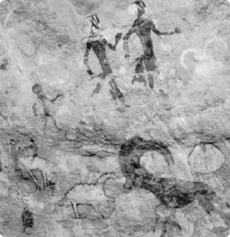

الحضارة الأشولية
عمد الانسان في هذا العصر الحجري القديم الأسفل أول الأمر إلى تشظية النواة الحجرية تشظية أولية ثم إدخال التعديلات عليها مرة ثانية مع الابقاء على جزء منها أملس لصنع فأس يدوية يسهل على اليد البشرية القبض عليها بطريقة جيدة واستخدامها في نبش الأرض أو قتل الحيوان أو قطع أغصان الأشجار إلى غير ذلك من الاستخدامات اليومية . وأهم حضارتين ظهرتا في العصر الحجري القديم الأسفل هما الحضارة الأبيفيلية، والحضارة االأشولية.
إقرء المزيد